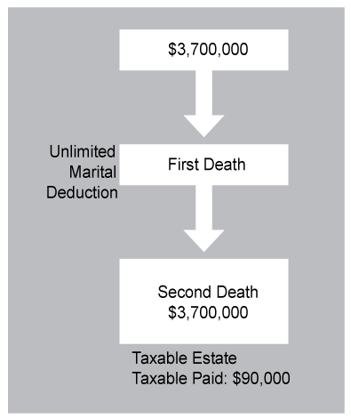

Legislation in recent years has made the estate planning process much simpler for most people. This is due to two key changes: Click each change to learn more.
In 2000, each individual received a credit against the gift and estate tax that protected the first $675,000 from the transfer tax. At the time, that was the largest credit in history, and it had taken 15 years for it to go from protecting $400,000 to protecting $675,000.
But since 2000, the Applicable Credit/Exclusion Amount has risen rapidly to protect the first $5,450,000 from taxation. This has virtually eliminated the federal transfer tax from being a planning issue for the vast majority of Americans.
In 2016, a married couple's combined Applical Exclusion Amounts can protect $10,900,000 of assets from transfer taxation. Even if everything is left to the surviving spouse, the executor merely files an estate tax return "porting" over the Deceased Spousal Unused Exclusion Amount; no further planning is required. This combined amount is more than sufficient to protect the vast majority of married couples from having to worry about paying a federal estate tax.
Prior to 2011, it was not possible for a deceased spouse to pass on his or her Unused Exclusion Amount to a surviving spouse. This meant that any Unused Exclusion Amount in the first estate would be forever lost as an opportunity for protecting assets from the transfer tax. This resulted in the need for significant planning to optimize the use of both spouses' Applicable Exclusion Amounts whenever their combined estates exceeded a single Applicable Exclusion Amount, as illustrated in the following example:
In 2009, Joe and Martha Average, a married couple who were both U.S. citizens, had a combined estate of $3.7 million. They had very simple wills whereby they left everything to the survivior.* The Applicable Exclusion Amount in 2009 was $3.5 million. Together, they had a combined Applicable Exclusion Amount of $7 million – more than enough to protect their combined estate.

Because the assets passed by way of the unlimited marital deduction, the first spouse's Applicable Exclusion amount goes unused and the surviving spouse's estate is left with all the assets and only a single Applicable Exclusion Amount to protect them from taxation. The result is that $200,000 of assets go unprotected, resulting in a tax bill of $90,000. Clearly, in the days before portability, which allows the surviving spouse to inherit the Deceased Spousal Unused Exclusion (DSUE) amount, this simple plan could be quite costly.